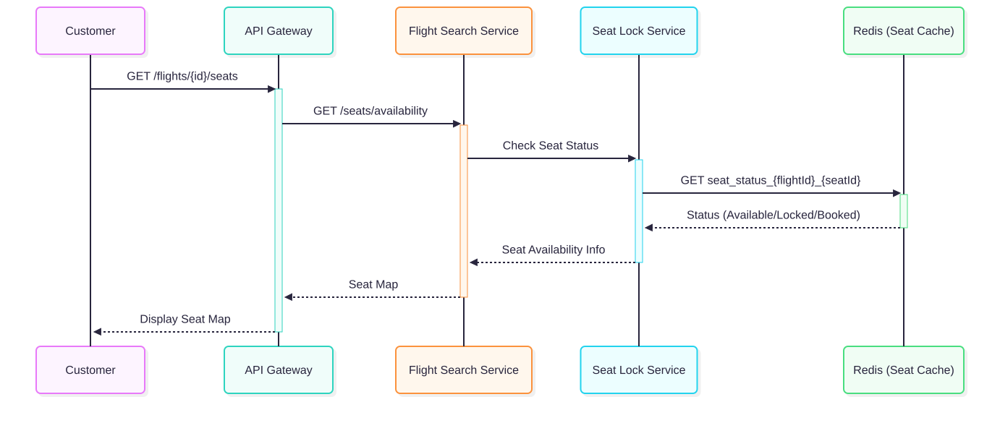

Flight Search Flow
Discovery & Selection
SEARCH PIPELINE & SEAT MAP
Search Pipeline

High-Level Flow
Process Execution
Request: Customer sends GET request with source, destination, and date.
Routing: API Gateway authenticates and routes to Flight Search Service.
Query & Response: Service queries Flight DB (Read Replica), enriches with fare info, and returns flight list.
Seat Map Preview

UI Interaction
Process Execution
Selection: Customer selects a specific flight to view seat map.
Validation: Seat Lock Service checks Redis for real-time lock status.
Visualization: Returns seat matrix with status (Available, Occupied, Locked) to frontend.